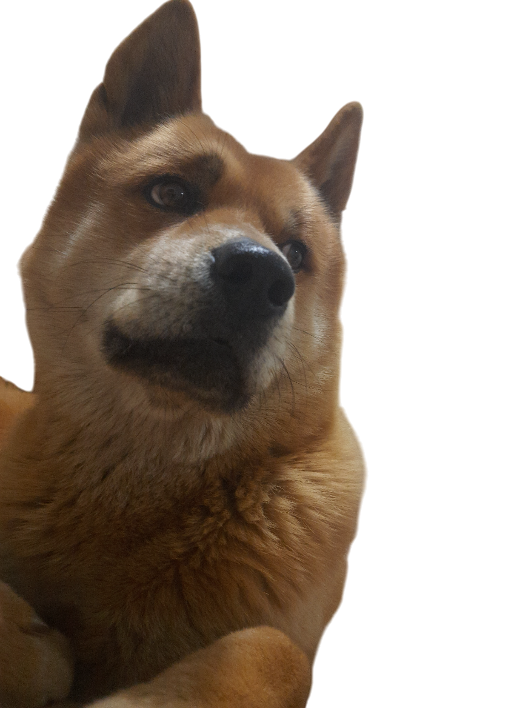
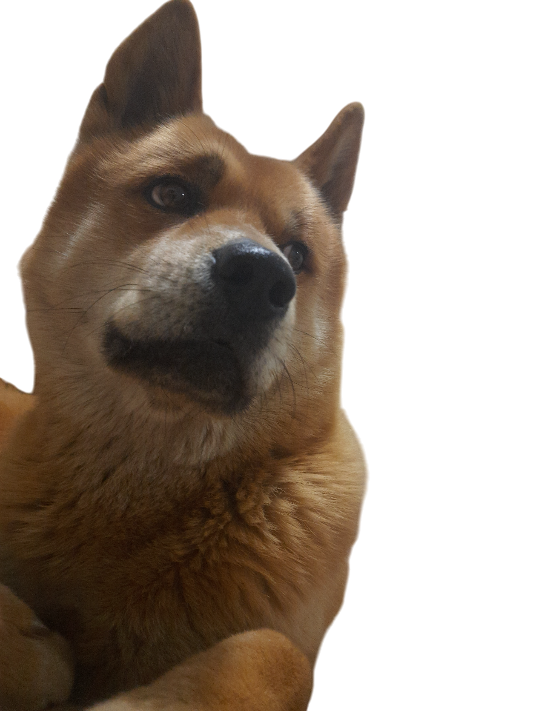

Pudim do Yoshi
Ingredientes:
- 1 lata de leite condensado
- 3 ovos inteiros
- 1 lata de leite (medida da lata de leite condensado)
Ingredientes para a calda
- 1 xícara (chá) de açúcar
- 1/2 xícara de água
Modo de preparo
Pudim
- Primeiro, bata bem os ovos no liquidificador.
- Acrescente o leite condensado e o leite, e bata novamente.
Calda
- Derreta o açúcar na panela até ficar moreno, acrescente a água e deixe engrossar.
- Coloque em uma forma redonda e despeje a massa do pudim por cima.
- Asse em forno médio por 45 minutos, com a assadeira redonda dentro de uma maior com água.
- Espete um garfo para ver se está bem assado.
- Deixe esfriar e desenforme.
 
